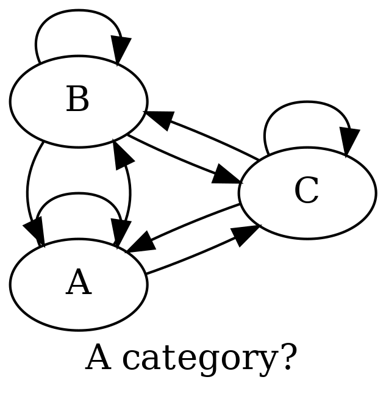
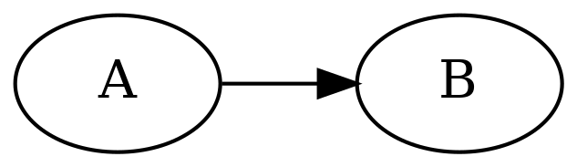

class: center, middle ### Formal verification of higher-order probabilistic programs <img src="assets/img/bayes_cartoon.png" style="display:block;margin-left:auto;margin-right:auto;max-width:300px;"/> #### Presented by: McCoy! --- ## Motivation **Why do we care about verification of probabilistic programs (let alone higher-order ones) at all?** ______ * Modeling and inference _is hard_ - why make it harder by allowing unsound semantics when we can afford to check? --- * Think: tensor shape checkers for neural network specification languages (think: PyTorch, TensorFlow, Dex, etc) - what is the equivalent for probabilistic programming? .cols[ .fifty[ ] .fifty[ 1. ***How can we be sure the automatic statistician is correct?*** 2. ***What if it uses provably invalid inference algorithms?*** 3. ***Would you trust an AI system without provably correct inference?*** ] ] ______ * How can you be sure a static tool works for all programs without a proof? * Map your language to a denotational space (a mathematical space) - map transformations described by your language to reasoning principles in the denotational space. ** An (unfortunate) theme: difficult-to-describe features (automatic differentiation, probabilistic programming) map to somewhat complex categories (differentiable manifolds, quasi-Borel spaces).** --- .cols[ .twenty[## Agenda ] .sixty[ ______ 1. Probabilistic programming - all about measures 2. Context: Simply typed lambda calculi, Cartesian closedness, etc 3. What does a "higher-order" language with measures look like? 4. What does verification look like here? 5. Why is this useful? * The goal is not to prove everything rigorously - but to support your own understanding of the story (and encourage your own exploration). ______ <img src="assets/img/buzz_measures.jpg" style="display:block;margin-left:auto;margin-right:auto;max-width:350px;"/> ]] --- .cols[ .thirty[ ## Bayesian inference ] .sixty[ ______ <mathjax>\begin{equation}\ P(A | B) = \frac{\underbrace{P(B | A)}_{\text{likelihood}} \ \underbrace{P(A)}_{\text{prior}}}{\underbrace{P(B)}_{\text{evidence}}} \ \text{(Bayes' Theorem)}\end{equation}</mathjax> ______ ] ] A sentient being starts out with a distribution <mathjax>$P(A)$</mathjax> over quantities in the world <mathjax>$A$</mathjax>. These quantities may be correlated with other quantities <mathjax>$B$</mathjax> - this is communicated by the likelihood <mathjax>$P(B | A)$</mathjax>. When observing an instance of <mathjax>$B$</mathjax>, the correlation should allow us to update our beliefs about the possibilities for <mathjax>$A$</mathjax>. <mathjax>\begin{equation}\rightarrow \underbrace{P(A | B)}_{\text{posterior}}\end{equation}</mathjax> This is the fundamental process of Bayesian inference. ______ To formalize this process using mathematics, we must turn to measure theory - because distributions are measures, and a conditional distribution <mathjax>$P(A | B)$</mathjax> is a measure theoretic object called a [Radon-Nikodym derivative](https://en.wikipedia.org/wiki/Radon%E2%80%93Nikodym_theorem). --- ## Probabilistic programming * Understanding computable representions of operations on measures. ______ .cols[ .twenty[ One example representation: Gen's generative function interface ] .eighty[ <figure class="latex"><img class="latex" src="latex/latex_g6053.png"/><figcaption class="latex">A generative function.</figcaption></figure>]] ______ A _generative function_ is a type of computational object which supports a well-defined interface. Roughly, how do I sample, evaluate density at a point, get gradients with respect to parameters, and gradients with respect to density. .cols[ .fifty[ <img class="dot" src="images/dot_g6054.png"/> ] .fifty[ How do we handle the fact that the likelihood _is a program_? ] ] --- ## Background Denotational semantics of probabilistic programming languages has been a hot topic (small selection) recently: 1. [Denotational Validation of Higher-Order Bayesian Inference](https://arxiv.org/pdf/1711.03219.pdf) 2. [Trace types and denotational semantics for sound programmable inference in probabilistic languages](https://dl.acm.org/doi/10.1145/3371087) 3. [A Convenient Category for Higher-Order Probability Theory](https://arxiv.org/pdf/1701.02547.pdf) ______ .cols[ .thirty[ <center><h4>Key question (?)</h4></center> ] .sixty[ What does "higher-order" mean in the context of programs which denote measures and operations on measures? ] ] .cols[ .fifty[ ] .fifty[ <br> `f` denotes a measure over functions ... _what does that even mean?_ ] ] --- .cols[ .thirty[ ## Cats ] .sixty[ ______ Unavoidable: we need a bit of _category theory_ for this discussion.  ______ ] ] Informal: a _category_ is a collection of objects with arrows (called _morphisms_) between them. The arrows satisfy nice properties: 1. If an arrow goes into another arrow, the composite arrow is in the category. 2. Arrows are fully associative. 3. Each object has an identity arrow. ______ In an attempt to reach a state of child-like wonder, math/CS people draw diagrams and say "hmm, does this pattern exist in _insert mathematical space_?" Such a pattern is typically called a _universal construction_. --- Let's look at an example of a _universal construction_. ______ .cols[ .fifty[ ### Initial object An object `I` in a category `C` so that, for every object `X` in `C`, there is exactly one morphism `I -> X`. ] .fifty[ ### Terminal object An object `I` in a category `C` so that, for every object `X` in `C`, there is exactly one morphism `X -> I`. ] ] ______ Let's consider the category of sets `Set`: 1. Terminal objects are any singleton set `Unit` with lone element `T`. * For every set `S`, there is exactly one morphism (in `Set`, one function) which maps a set to `Unit`. * Unique (up to isomorphism) -- because any singleton is isomorphic to any other. 2. The initial object is the empty set `{}`. * Why? Think about functions (again, because we are in `Set`!) as choosing subsets of Cartesian product of two sets. * The empty set is the only initial object in `Set`. --- Generally, computer scientists concern themselves with _Cartesian closed categories_. We typically like to think that our programs denote objects + transformations in some mathematical space. One might ask: how do we model function application? ______ .cols[ .thirty[ ### Cartesian closed categories ] .sixty[ _Cartesian closedness_ is a property of categories. The technical definition is: 1. Must contain the terminal object. 2. Must contain a product object for any pair of objects. 3. **Must contain an exponential for any pair of objects**. ] ] ______ If a category has this property, it can be used to model (denotationally) function application in programming languages. In a moment, we'll understand this intuitively. * Further: [(John Baez) CCCs and the <mathjax>$\lambda$</mathjax>-calculus](https://golem.ph.utexas.edu/category/2006/08/cartesian_closed_categories_an_1.html) --- ______ .cols[ .thirty[ <center><h4>Internal languages</h4></center> <img class="dot" src="images/dot_g6056.png"/> ] .sixty[ A key concept is the notion of _internal language_ (or _internal logic_) of a category. For `Set` (and, more generally, for any _Cartesian closed category_) - there exist simply typed lambda calculi which model the category. When used in this context, these calculi are colloquially called internal languages. Also: [internal logic in nLab](https://ncatlab.org/nlab/show/internal+logic) ]] ______ Consider that `Set` has a natural notion of product and co-product. Imagine what the simply typed lambda calculi equivalent would be (think about the types)? ```haskell data Type = BaseType | (Type, Type) | Type + Type | Type -> Type ``` .cols[ .fifty[ ] .fifty[ ] ] --- What about the "function type" `Type -> Type`? ------ .cols[ .fifty[  ] .fifty[ #### Morphisms In category theory, a mapping between two objects is called a _morphism_. ] ] Categories are closed under composition of morphisms, and: 1. All morphisms are fully associative. 2. For each object in the category, there is an identity morphism. ______ Thinking in types: (informally) morphisms are sort of like _an instance_ of a function type `A -> B`. In `Set`, for example, there are many ways to fill the type `Int -> Int` with a total function. Each such total function is a morphism from the object `Int` to `Int`. Ergo, a function type `A -> B` is actually _a set of morphisms_ - compactly called the `HomSet(A, B)`. ______ <center style="margin-top:2rem;">Of course, shouldn't a function type be an object in <code>Set</code>? Yes, dear reader!</center> --- What defines a function? Category theory: application! ______ .cols[ .thirty[ #### Function object ] .sixty[ Ingredients for a _function object_ from `A` to `B`: 1. An object (which we'll call) `A => B`. 2. A morphism `eval :: (A => B) x A -> B`. 3. For any object `Z` with morphism `g :: Z x A -> B`, a unique morphism `h :: Z -> (A => B)` that factors `g` through `eval`: <center><mathjax>$g = \text{eval} \ \circ (\text{h} \times id)$</mathjax></center> ] ] ______ Remember: the way to think about this sort of construction is as a pattern which may or may not "match" to the category in question. * **It's not important to fully understand this now.** More important: understanding that there's a way to identify categories with this object, and, even more important, a way to identify when a category contains this object as a base object in the category. --- ## Back to higher-order probability ______ So, because formalization of probability theory have traditionally used `Meas` - we'd really like to use `Meas` to model higher-order probability. But `Meas` is not Cartesian closed. The intuition here is that the set of measurable functions from measurable A to measurable B cannot be given a measurable structure. 1. In other words, function object in `Meas` is external to `Meas`. 2. In the simply typed lambda calculus description, this means we can't denote the function type `Measurable A -> Measurable B` as the function object. ______ <h4><center style="margin-top:2rem;margin-bottom:2rem;">Bad: we can't reason formally about programs.</center></h4> ______ We like formal reasoning -- it gives us confidence that our manipulations are correct by math. --- ## Summary The key is: `Meas` is not Cartesian closed, so (as computer scientists) we are unable to develop a simple typed lambda calculi representation of `Meas` as a means of formalizing higher-order probabilistic languages. * The full proof: [Borel Structures for Function Spaces](https://projecteuclid.org/journals/illinois-journal-of-mathematics/volume-5/issue-4/Borel-structures-for-function-spaces/10.1215/ijm/1255631584.full) ______ * Let's find a Cartesian closed category which has suitable properties to represent higher-order languages with measures. 1. Unambiguously denote function types and higher-order functions. 2. Theorems we prove in the category apply to programs which denote manipulations of the categorical objects. ______ The approach taken by the previously listed papers is to study the category of _quasi-Borel spaces_ - a category recently introduced in 2017. * [A Convenient Category for Higher-Order Probability Theory](https://arxiv.org/abs/1701.02547) * [The semantic structure of quasi-Borel spaces](https://pps2018.luddy.indiana.edu/files/2018/01/pps18-qbs-semantic-structure.pdf) --- .cols[ .fifty[ #### Classical probability 1. We fix a measurable space <mathjax>$(\Omega, \Sigma_\Omega)$</mathjax> as the primitive sample space. 2. Observations derive from pairs <mathjax>$(X, f)$</mathjax> where <mathjax>$X$</mathjax> is a measurable space with sigma algebra <mathjax>$(X, \Sigma_X)$</mathjax> and <mathjax>$f$</mathjax> is measurable <mathjax>$f: \Omega \rightarrow X$</mathjax>. Note: `f` is measurable if the pre-image of any set in `X` is measurable. ] .fifty[ #### Example 1. ```haskell m :: Set{Bool x Bool} -> R m {} = 0.0 m {(T, _)} = 0.2 m {(F, _)} = 0.3 ``` Derive the measure by `M = sum $ map m col` over collections of sets. 2. ```haskell f :: Bool x Bool -> Bool f a b = a || b ``` ] ] ______ <div class="definition" text="quasi-Borel space">A quasi-Borel space <mathjax>$X$</mathjax> consists of an underlying set <mathjax>$X$</mathjax> and a set of functions <mathjax>$M_X \subseteq (\mathbb{R} \rightarrow X)$</mathjax> satisfying: <ol><li><mathjax>$M_X$</mathjax> contains all constant functions.</li> <li><mathjax>$M_X$</mathjax> is closed under composition with measurable functions. So if <mathjax>$f : \mathbb{R} \rightarrow \mathbb{R}$</mathjax> is measurable and <mathjax>$\alpha \in M_X$</mathjax>, then <mathjax>$\alpha \circ f \in M_X$</mathjax>.</li> <li><mathjax>$M_X$</mathjax> is closed under defining piecewise functions using functions on disjoint Borel domains. So, for any partition of <mathjax>$\mathbb{R} = \cup_{i\in\mathbb{N}} S_i$</mathjax> with <mathjax>$S_i$</mathjax> Borel, and <mathjax>$\{\alpha_i \in M_X\}_{i\in\mathbb{N}^\prime}$</mathjax>, then the piecewise function <mathjax>$\beta(x) = \alpha_i(x)$</mathjax> when <mathjax>$x \in S_i$</mathjax> is in the space <mathjax>$M_X$</mathjax>.</li></ol></div> --- The key to understanding quasi-Borel spaces is to understand the role that <mathjax>$\sigma$</mathjax>-algebras play in measure theory. ______ 1. When you select a <mathjax>$\sigma$</mathjax>-algebra - it is equivalent to selecting "predicates" which you can ask the probability of. If you try to ask a question "what is the probability of this event occurring" and it is not in the selected <mathjax>$\sigma$</mathjax>-algebra - the predicate cannot be answered (the set is not measurable). 2. How do you assign a <mathjax>$\sigma$</mathjax>-algebra to the set denoted by function type `X -> Y`? There is no <mathjax>$\sigma$</mathjax>-algebra on `X -> Y` which makes function application measurable (where `apply :: (X, X -> Y) -> Y`). ______ To avoid this problem, the quasi-Borel proposal is: 1. Let's avoid talking about <mathjax>$\sigma$</mathjax>-algebras on our space `X`, and instead talk about "admissible random elements" from a well-behaved measure space <mathjax>$\mathbb{R}$</mathjax> to our space. 2. These functions are now like the predicates above -- a deterministic function on `X` is measurable _iff_ composing it with an admissible random element yields another admissible random element. --- ______ > In this paper, we take a step further and we develop a set of program logics, named PPV, for proving properties of programs written in an expressive probabilistic higher-order language with continuous distributions and operators for conditioning distributions by real-valued functions. ______ From this contribution statement, we should essentially be expecting two things: 1. A simply typed lambda calculus (STLC) whose denotational semantics are given by the category of quasi-Borel spaces `QBS`. This will be the base language. * `QBS` supports product objects, function objects, and is Cartesian closed - so it is "`Set`-like" and supports denotational reasoning about higher-order functions! * There's also a functor from the category `Meas` to `QBS`. See [A Convenient Category for Higher-Order Probability Theory](https://arxiv.org/pdf/1701.02547.pdf) (1.A) 2. A logic which quantizes over expressions in the STLC. This will be the system which reasons about programs in the base language. --- <div class="definition" text="HPPROG">A higher-order language for probabilistic programming.</div> ```haskell -- A set of basic types + kinds. data BT = Unit | Bool | Nat | Real | PosReal | BT x BT | List(BT) -- A set of types + kinds. data T = BT | M[T] | T -> T | T x T | List(T) -- A set of terms. data Expr = -- Variables, builtins, and application. x | c | f | Expr Expr | <Expr, Expr> -- A product constructor. | Project(i, Expr) -- Product destructor. -- Pattern matching. | case Expr with [match(i, x_i) => Expr] over i -- Recursive function definitions. | letrec f x = Expr | return Expr | bind Expr Expr -- Monadic return + bind. -- Query computes a posterior from a prior + likelihood. | query Expr => Expr -- Primitives representing basic distributions. | Uniform(Expr, Expr) | Bern(Expr) | Gauss(Expr, Expr) ``` --- The language `HPPROG` is a typed lambda calculus with products, pattern matching, recursive function definitions, and monadic lifting/binding as well as conditioning. 1. `Product -> <Expr ,Expr>` 2. `Pattern matching -> case Expr with [match(i, x_i) => Expr] over i` 3. `Recursive function definitions -> letrec f x = Expr` 3. `Monadic lift -> return Expr` with monadic type `M[T]`. 4. `Monadic bind -> bind Expr Expr` with monadic type `M[T]` 5. `Query -> query Expr Expr` with resultant monadic type `M[T]`. ______ .cols[ .thirty[ <h4><center>Monadic bind</center></h4> <img class="dot" src="images/dot_g6060.png"/> ] .sixty[ The monadic bind operation chains together computations in the monadic context. ```haskell -- Here, 'M' is the monad. (>>=) :: M a -> (a -> M b) -> M b ``` ] ] ______ * Handling measures with a monadic type `M[T]` is relatively standard, see: [monads of probability, measures, and valuations](https://ncatlab.org/nlab/show/monads+of+probability%2C+measures%2C+and+valuations) and [the Giry monad](https://ncatlab.org/nlab/show/Giry+monad). --- Monadic bind (and `return`ing an inhabitant of `T` to the monadic type `M[T]`) is key to understanding how the language can support the denotational interpretation in the category `QBS`. ______ A set (also: a type `T` which indicates a set) requires _more structure_ to support measurability. In classical probability, this "more structure" is: 1. A <mathjax>$\sigma$</mathjax>-algebra (see: <mathjax>$\Sigma_\Omega$</mathjax> from prev. example). 2. A measure (see: <mathjax>$M$</mathjax>) - e.g. a mapping from the algebra to positive extended reals which takes `{} -> 0` and is countably additive. One way to understand the usage of monads here is allowing us to talk about computations which automatically include this "extra" structure on top of sets. ______ .cols[ .thirty[ #### Example ] .sixty[ ```haskell f :: a -> Maybe b g :: Maybe a c :: Maybe b = (>==) g f ``` ]] In the monadic interpretation, a monad `M` allows programmatically specifying "computational effects" which are richer than the base types (e.g. sets) allow. E.g. in the `Maybe` monad, the process is: map a computation over type `T` to a computation `Maybe T` which indicates that the computation may fail to return anything at all. --- <div class="definition" text="PL">A logic for probabilistic programs.</div> ```haskell -- A.k.a. terms. data EnrE = Expr | E(x, EnrE, Expr(x)) | scale(EnrE, EnrE) | normalize(EnrE) -- A.k.a formula. data LogF = (EnrE = EnrE) | (EnrE < EnrE) | Top | Btm | LogF & LogF | LogF => LogF | not LogF | Forall(x, T, LogF) | Exists(x, T, LogF) ``` --- Let's quickly look at the extended typing rules for enriched expressions. .cols[ .fifty[ <br> <br> ] .fifty[ 1. Integrating an always positive measurable function with a measure always yields a positive <mathjax>$\mathbb{R}$</mathjax> number. 2. Scaling a measure by an always positive measurable function yields a measure. 3. Normalizing a measure converts it into a probability measure (which is still a measure). ]] ______ I'm using "measure" above loosely - the denotation of `M[T]` means that this is a quasi-Borel measure: an equivalence class of admissible random elements. This fact is irrelevant to the typing - because these theorems also hold in QBS. --- We can also quickly look at the selection of proof rules: ______ ______ (From top-left, clockwise) 1. (?) This honestly confused me. I think this is showing that two terms are equivalent after reduction - we can conclude they are equivalent and add that to the precondition context 2. Proving that a term `t = u` implies that we can swap it in substitution for a formula <mathjax>$\phi$</mathjax>. 3. If we have <mathjax>$\psi => \phi$</mathjax> in the precondition, and we also have <mathjax>$\psi$</mathjax>, we can conclude that we have <mathjax>$\phi$</mathjax>. This is using an implication. 4. This rule allows us to add an implication. 5. This rule is a rule about axioms. --- There's a large section where the authors essentially re-state many theorems of classical probability using the constructs of `PL`: --- .cols[ .fifty[ #### Unary ] .fifty[ #### Relational ] ] ______ One really nice thing: the pure/probabilistic constructions separate over the monadic constructs! .cols[ .fifty[ At a high level, the unary logic `UPL` allows singular judgements about a well-typed expression `e : T`. The relational logic deals with judgements on pairs of well-typed `HPProg` expressions. ] .fifty[ <img src="assets/img/rpl_rules.png" style="display:block;margin-left:auto;margin-right:auto;max-width:400px;"/> ] ] --- #### Strengths ______ 1. A nice example of a logic which allows reasoning over a language with higher-order functions and probabilistic conditioning (on real and discrete) random variables! 2. Logic rules nicely separate across monad. 3. Logic subsystems are modular. The UPL is designed to handle judgements of a certain type, similarly for the RPL. 4. Importantly -- it's a step in the right direction. More people should really be thinking about this in probabilistic programming. --- #### Weaknesses ______ 1. Base language is clunky -- you always have to setup a product variable and query via projections on that product. Hopefully this could be sugared up in some way. In short, it's not designed for writing complex, modular models. 2. I was unimpressed by the examples (with the exception of Lipschitz GVI verification), for a variety of reasons. * Slicing example is absolutely useless in practice. Unless the proof can be automated across different structured programs, it seems like an exercise in futility. * Gaussian mean learning is hardly a useful example to test a framework like this on. E.g. they coerce the program into higher-order form ... but it could easily be expressed without higher-order functions. * I actually did like the self-normalizing importance sampling example. I think it illustrated a principle which I would have liked to see more: relationaly judgements which are parametric over one of the expressions -- here, the result is a bound which depends on difference between empirical (e.g. sampled mean) and target (see [Chatterjee + Diaconis](https://projecteuclid.org/journals/annals-of-applied-probability/volume-28/issue-2/The-sample-size-required-in-importance-sampling/10.1214/17-AAP1326.full)).